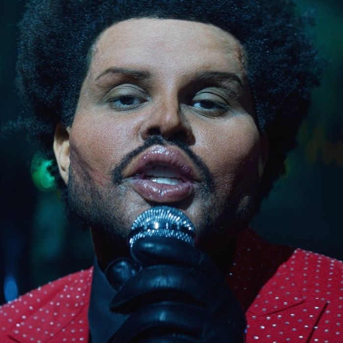

The Weeknd, byname of Abel Makkonen Tesfaye, (born February 16, 1990, Toronto, Ontario, Canada), Canadian rhythm-and-blues singer and songwriter who was perhaps best known for his explicit songs about sex and drugs, many of which were autobiographical, and for his soaring falsetto and its singular tremolo.
Tesfaye’s mother and grandmother immigrated in the 1980s to Canada from Ethiopia, and his first language was Amharic. When he was in grade 11, he quit school and left home, devoting himself to unbridled partying. Tesfaye eventually landed a job at American Apparel and at the same time began writing songs about drug use, casual sex, and alienation.
He crossed paths with musician and producer Jeremy Rose, and they started working together. Their collaboration yielded three atmospheric songs—“The Morning,” “Loft Music,” and “What You Need”—with lyrics that were partly sung and partly rapped. The songs, credited to The Weeknd, were uploaded as audio files to the video-sharing Web site YouTube in late 2010; their popularity grew exponentially after they were posted to the blog of Canadian rapper Drake.